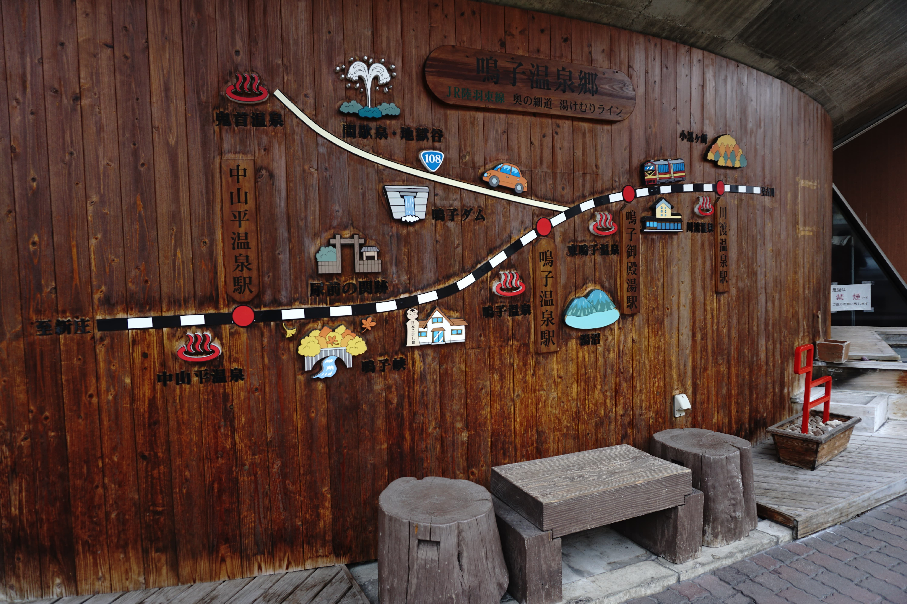
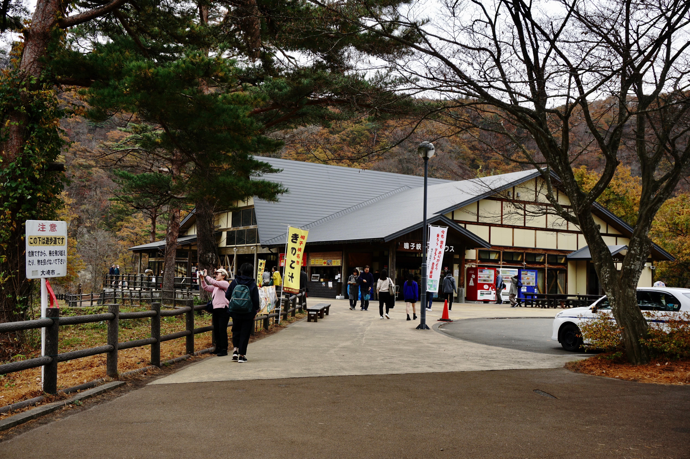
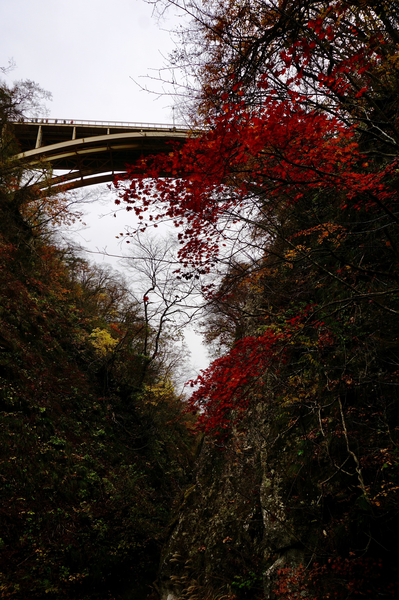
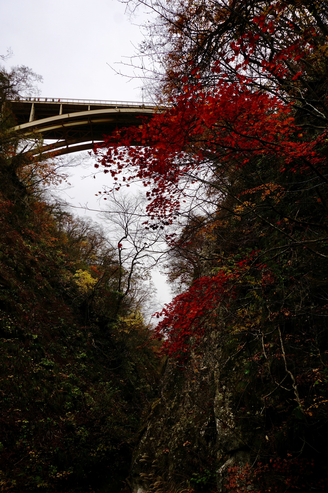

11/10旅行第二天6:50左右，我們從Hotel Monte Hermana Sendai步行到附近的「仙台站」搭乘7:06發車的Yamabiko號，沿著東北·北海道幹線到「谷川站」，接著從「谷川站」轉乘陸羽東線前往「鳴子溫泉站」。
在台灣預定車票時發現從谷川轉車的時間只有七分鐘。7:20到達谷川站之後，往鳴子溫泉的火車7:27就發車了，若七分鐘內趕不上這班火車，則需等到9:20。安排行程時還不放心查了谷川站內平面圖，看見在來線月台就在新幹線的旁邊，我們全程只需刷JR東日本東北周遊券的那張票即可，無需在車站內花費太多時間，這才稍微安心，有自信那七分鐘應該足夠我們使用。實際跑過一次確定這七分鐘確實搓搓有餘，若有需要的旅者無須太過焦慮。
不過我看錯車內的到站站名提示，看見「鳴子」兩個字就匆忙下車，結果在「鳴子溫泉」的前一站「鳴子御殿湯」就下車了😂。走出車站發現是個無人車站，也可能是因為太早到了，附近僅有一間賣名產的小店開著。沒吃早餐太飢餓的我們不小心買了一盒需要配飯才能下嚥的海苔捲，後來還因為太鹹吃不完😂。
其實那個海苔捲味道很好，海苔酥脆，裡頭包裹著類似梅子之類酸鹹的東西，若是配稀飯肯定對味。另外也要謝謝好心的店員幫我們打電話叫計程車使我們順利到達鳴子峽(當時已過了紅葉季，巡迴巴士已停駛，僅能搭計程車前往)。
自助旅行得靠自己的力量前往想到達的地方，途中經常出現的小插曲都讓整段旅行更加豐富多彩。即便稍微辛苦了一些，可是和日本孩子一起追電車、體驗窗外6度但熱氣從雙腳後面無止盡冒出的溫暖列車、過程中得到當地人各種幫助的欣慰，深刻融入當地生活的感覺和成就感都會讓這些困難變成更甜美且與眾不同的旅行記憶。
 

鳴子峽的楓葉70%已經凋零，峽谷的風景還是讓我們驚艷，若是在楓葉見傾時過來肯定更使人難以忘懷吧！

下去鳴子峽谷的步道看似陡峭，全程都有石階及欄杆，小心行走的話還是算安全的。單程二十分鐘美景不間斷，天氣晴朗的時候十分推薦下去走走，欣賞瀑布、峽谷、楓葉的三重奏。
← 回到首頁